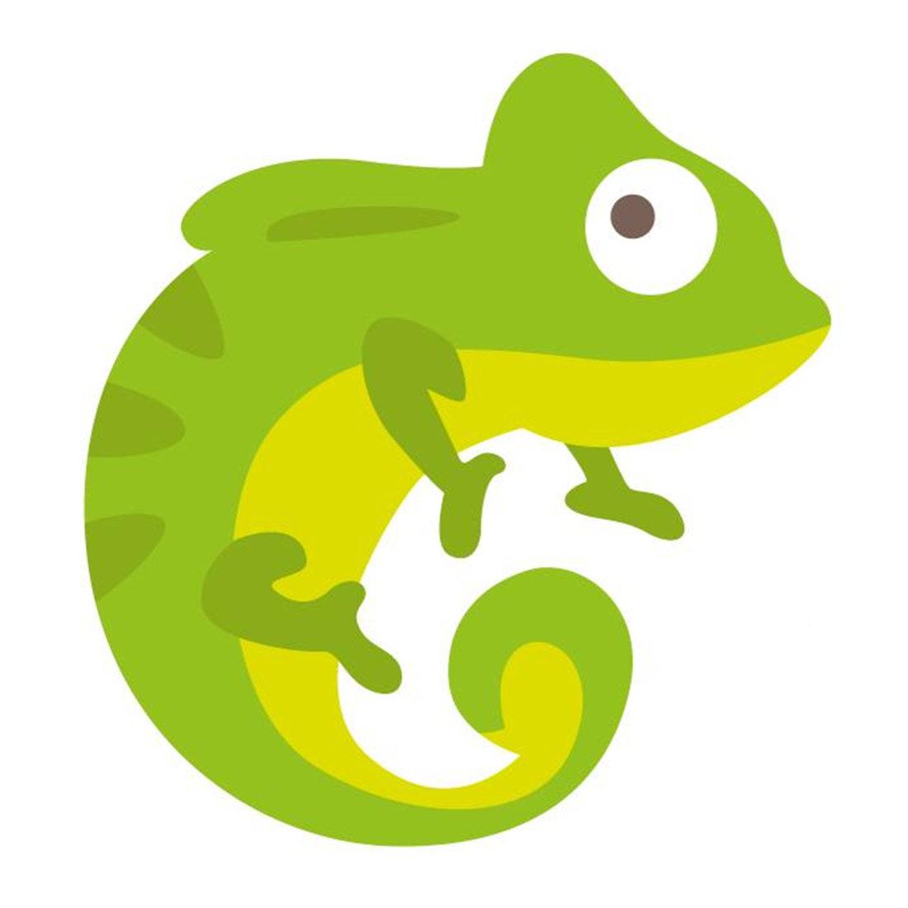

Charmaleon
These famously colorful lizards are a diverse group of color- changing creatures. They use their ability to change their skin pigmentation as a form of camouflage and communication.
These famously colorful lizards are a diverse group of color- changing creatures. They use their ability to change their skin pigmentation as a form of camouflage and communication.